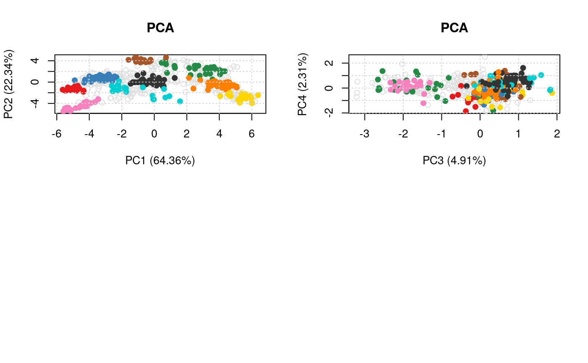
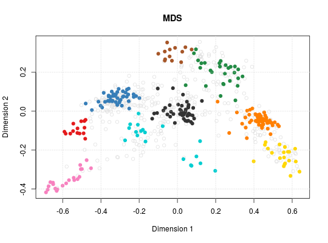
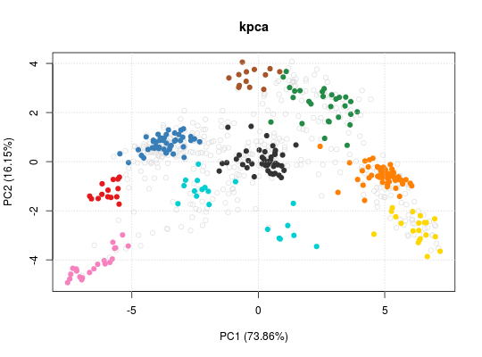
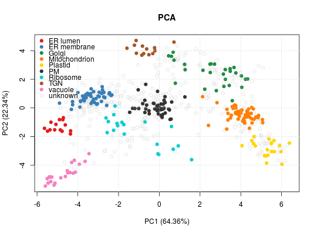
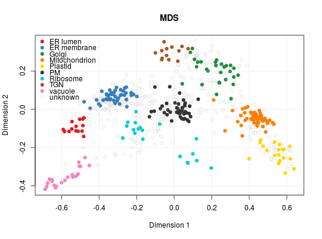
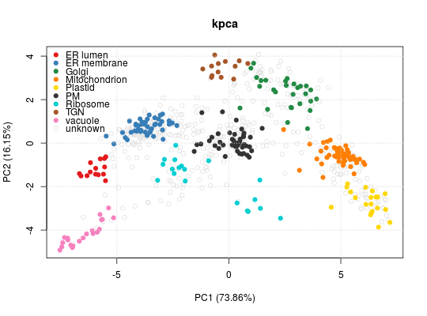
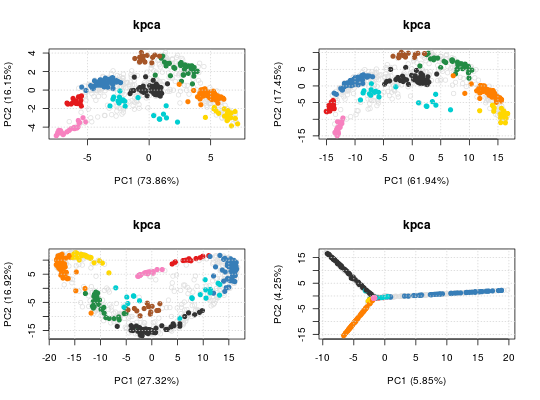
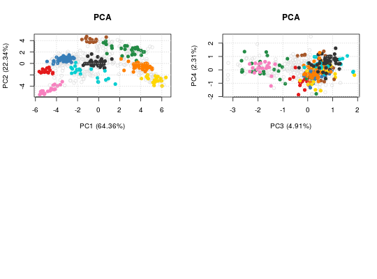

A class for spatial proteomics visualisation, that upon instantiation,
pre-computes all defined visualisations. Objects can be created with
the SpatProtVis constructor and visualised with the plot
method.
The class is essentially a wrapper around several calls to
plot2D that stores the dimensionality reduction
outputs, and is likely to be updated in the future.
SpatProtVis(x, methods, dims, methargs, ...)
MSnSet to visualise.plot2Dmethods
(except "scree"). See plot2D for details.1 and 2. If provided, the length
of this list must be identical to the length of methods. methods. vismats:"list" of matrices containing the
feature projections in 2 dimensions. data:"MSnSet". methargs:"list" of additional plotting
arguments. objname:"character" defining how to name the
dataset. By default, this is set using the variable name used at
object creation. plot:methods and additional arguments defined in the
constructor. If used in an interactive session, the user is
prompted to press 'Return' before new figures are displayed. show:The data for the individual visualisations is created by
plot2D.
library("pRolocdata") data(dunkley2006) ## Default parameters for a set of methods ## (in the interest of time, don't use t-SNE) m <- c("PCA", "MDS", "kpca") vis <- SpatProtVis(dunkley2006, methods = m)#>#>#>vis#> Object of class "SpatProtVis" #> Data: dunkley2006 #> Visualisation methods: PCA, MDS, kpcaplot(vis)#> Done.plot(vis, legend = "topleft")#> Done.## Setting method arguments margs <- c(list(kpar = list(sigma = 0.1)), list(kpar = list(sigma = 1.0)), list(kpar = list(sigma = 10)), list(kpar = list(sigma = 100))) vis <- SpatProtVis(dunkley2006, methods = rep("kpca", 4), methargs = margs)#>#>#>#>par(mfrow = c(2, 2)) plot(vis)#> Done.## Multiple PCA plots but different PCs dims <- list(c(1, 2), c(3, 4)) vis <- SpatProtVis(dunkley2006, methods = c("PCA", "PCA"), dims = dims)#>#>plot(vis)#> Done.